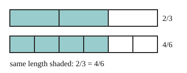

Part of Adding Fractions. Answer in the chat (1: ..., g: c), add sure or guess after any answer, and say done when finished.
Last time: which fraction is equal to 2/3? You said b) 3/4. It is a) 4/6.

Cut each piece of a fraction into 2 and you get twice as many pieces, each half the size, so the amount stays the same. That is why multiplying the top and the bottom by the same number gives an equal fraction (notes 2). Dividing both by a common factor goes the other way and simplifies it.
Q1. Fill in the top: 3/5 = ?/20
12
Right: 5 x 4 = 20, so the top is 3 x 4 = 12 (notes 2).
Q2. Simplify 18/24.
3/4 (guess)
Right: 6 goes into both, 18/6 = 3 and 24/6 = 4 (notes 2).
Q3. Mo says 2/3 and 3/4 are equal, since each top is one less than its bottom. What is wrong?
equal fractions come from multiplying top and bottom by the same number. Over 12, 2/3 is 8/12 and 3/4 is 9/12, so 3/4 is bigger
Right: over the same bottom they differ by one twelfth (notes 2).
You can now write a fraction over a new bottom, or simplify it.
What is 1/3 + 1/4?
a (guess)